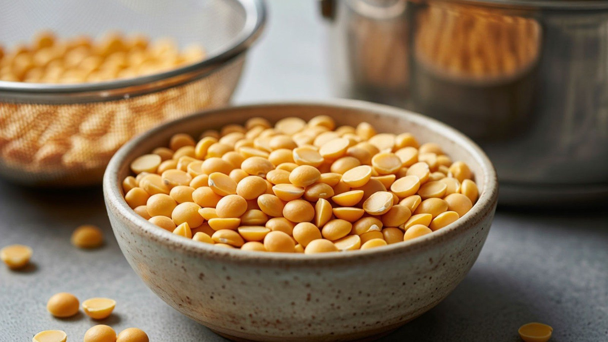
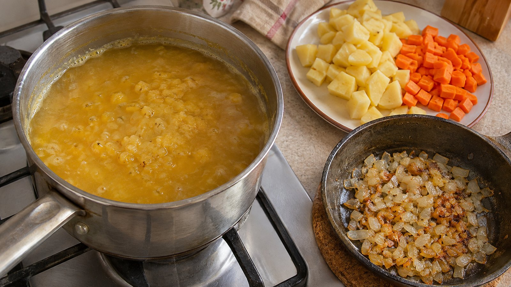

Гороховый суп с копчёностями: как сварить мягкий горох и не получить густую кашу
Гороховый суп с копчёностями хорош, когда горох уже мягкий, картофель сохранил форму, а бульон остаётся достаточно жидким, чтобы его хотелось есть ложкой, а не вилкой.
Но с горохом легко промахнуться: одна пачка разваривается быстро, другая долго остаётся плотной. А после остывания даже удачный суп становится заметно гуще. Разберёмся, когда класть овощи и как не превратить обед в кашу.
Что возьмём на кастрюлю
На четыре-шесть порций понадобится примерно 250 г сухого колотого гороха, 300–400 г копчёных свиных рёбрышек, 2,3–2,5 л воды, две средние картофелины, одна морковь и одна луковица.
Ещё пригодятся столовая ложка растительного масла, лавровый лист, чёрный перец, немного зелени. Соль добавляйте с учётом копчёностей: они уже могут быть довольно солёными.
В этом варианте именно копчёные рёбрышки дают бульону характерный вкус. Если заменить их другим мясом или обойтись без него, получится уже другой суп.
Колотый и цельный горох варятся по-разному
Для такого супа удобнее сухой колотый горох. Он обычно размягчается быстрее цельного и постепенно делает бульон бархатистым.
Переберите крупу, промойте её несколько раз, пока вода не станет заметно чище. Если есть возможность, замочите горох на несколько часов в холодной воде и держите в прохладе. Но для колотого гороха длительное замачивание не всегда обязательно: смотрите на рекомендации упаковки.

Старый сухой горох может вариться заметно дольше свежего. Единого времени для любой пачки нет. Лучше размять несколько горошин ложкой и проверить мягкость: по этому признаку понятнее, когда добавлять картофель.
Начнём с того, что готовится дольше всего
Положите промытый горох в кастрюлю, залейте водой и доведите до кипения. Уберите пену, уменьшите нагрев. Супу достаточно спокойного кипения без сильных брызг.
Копчёные рёбра можно положить сразу: они отдадут бульону аромат. Если на упаковке указано, что продукт требует полноценной термической обработки, следуйте этому указанию.
Варите, периодически помешивая, особенно ближе к концу, когда горох начинает развариваться и оседать на дно. При необходимости добавляйте горячую воду небольшими порциями.
Часто колотому гороху требуется около 45–90 минут, но ориентируйтесь прежде всего на мягкость. Если зёрнышко легко разминается ложкой, можно переходить к овощам.
Картофель подождёт своей очереди
Нарежьте картофель небольшими кубиками. Добавьте его, когда горох уже почти готов, иначе за долгое время картошка успеет развалиться.
Лук мелко нарежьте, морковь натрите или порежьте тонкой соломкой. На сковороде с небольшим количеством масла доведите овощи до мягкости и лёгкого золотистого оттенка.
Отправьте картофель в суп примерно на 10–15 минут, а затем добавьте лук и морковь. Время зависит от размера кусочков: картофель должен легко прокалываться вилкой, но не распадаться в пюре.

Рёбрышки можно достать, аккуратно отделить мясо от костей, нарезать и вернуть в кастрюлю. Проверьте, чтобы мелкие косточки не попали в тарелку.
Почему на следующий день суп становится гуще
После приготовления гороховый суп нередко становится гуще: разваренные частицы гороха связывают жидкость, особенно когда суп остывает. Поэтому суп, который был приятной густоты сразу после готовки, позднее может стать почти как пюре.
Это не обязательно означает, что вы ошиблись. Просто не стоит сразу делать бульон слишком густым. Если горох разварился до нужной нежности, а жидкости мало, подлейте немного кипятка и дайте супу снова прогреться.
Соль пробуйте уже ближе к концу, после того как копчёности отдадут вкус. Добавьте перец, лавровый лист, подержите на слабом огне ещё несколько минут и выключите плиту. Лавровый лист затем уберите.
Оставьте суп под крышкой на 10 минут. Готовую кастрюлю не держите долго в тепле: после остывания без долгого ожидания уберите остатки в холодильник.
В тарелке всё становится на свои места
Подавайте гороховый суп горячим, с зеленью и хлебом. При желании можно сделать простые сухарики из вчерашнего батона: подсушить кусочки в духовке до золотистого цвета и добавить непосредственно перед едой.
На следующий день разогревайте только нужную порцию и при необходимости добавляйте немного воды. Так проще сохранить приятную густоту и не переварить содержимое кастрюли.
Перед подачей попробуйте суп ещё раз: после добавления копчёностей соль может ощущаться сильнее. Сухарики лучше положить уже в тарелку, иначе они быстро размокнут.
Если любите привычные домашние обеды, заглядывайте в «Красиво жить». Вы предпочитаете гороховый суп пожиже или такой густой, что в нём почти не видно бульона?